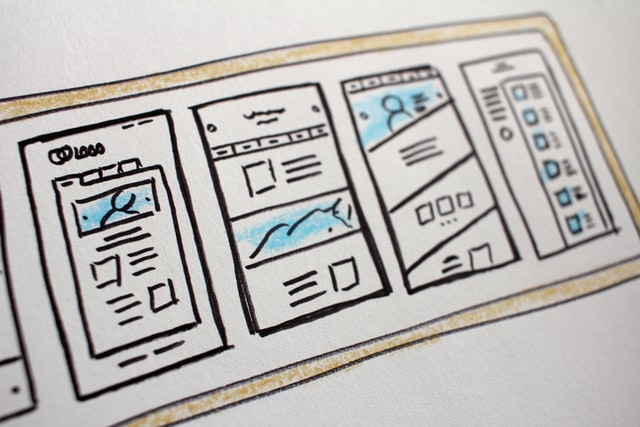
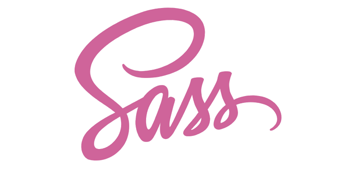

HTML-Skjema er en metode som lar brukeren til å sette inn data.
Data fra brukeren som ble satt inn sendes til en web server for å behandles.
Data som kan brukeren sende er for eksempel navn, passord, e-post og mye mer.
HTML-skjemaer gjør nettstedet mer responsiv og kan SEO tolke nettstedet bedre.
Media type er en metode i css som gjør nettsidens design passer de forskjellige skjermer.
Denne metoden tar for seg å gjøre innhold i nettsiden leslig uansett enhet brukeren bruker.
Som sagt media typer gjør det enklere til webutviklere å utvikle reponsive nettsider som kan være tilgjengelige
til alle brekere uansett enhet. Men med mange skjarm størelser og forskjellige teknologier er det vanskelig å noe fasit
til tilpasse alle enheter og selvom mediatypen gjør stor hjelp til webytviklere men de kan ikke sikre at innholdet 100%
passer og er tilgjengelig til alle enheter.

Fra begynnelsen av web og webutvikling har alle webutviklere vært opptatt av å
finne måter til vise web innhold riktig og ryddig uansett enheten som brukes.
Heletiden til i dag jobber webutviklere for å finne bedre løsnninger slik at
innhold passer alle visuelle enheter. Så lenge de visuelle enhetene utvikler
størrelsen og skjermoppløsninger på seg, er det jobb til webutviklere til
å passe innholdet til de enhetene.

Teknologien utvikler seg og det gjør HTML. I den nye versjonen HTML 5 er det enklere å sette
inn lyd og vedio til nettsiden enn før. De nye taggene ❰audio❯ og ❰vedio❯ i HTML 5 jobber
som img tagg. Menningen av de nye taggen er å kvitte de gamle metoder og ha mer responsive
designer.

Css-layouts er nettsidens utseende. Webutviklere prøver å designe nettsiden ved bruk av css
til at nettsiden ser fin og brukervennlig til brukeren. Css layouts innebarer mange metoder.
Jeg kommer til å skrive litt om noen av de viktigste metodene i denne siden.

Sass (Syntactically Awesome Style Sheets) er et script språk som gjør stiling av
nettside enklere og mer oversiktlig, men Sass kan ikke tolkes av HTML filer og må derfor
konverters til Css. Sass i utgangspunktet hjelper webutviklere å stile sidene på effektiv
måte ved å gjøre css kodene oversiktlige og kortere.
Det viktigste som sass innholder er veriabler. Man kan definere en veriabel med dollar tegn.

SEO (Search Optimaization engine) er mest kraftig teknikk for å nå folk i internett.
Det er ikke hemmelig at hvis bedrift eller privat person vil at mest mulig internett
brukere skal besøke sin nettside, må de ha den i første plass i søketreff.
Sosiale medier vokser opp stadig og de har forandret livet rundt oss slik at det er
umulig å forestille verden uten dem. Det viser hvor sterke sosiale medier er i dag.
Derfor er det viktig å koble nettsiden mot sosiale medier særlig Facebook og Tweeter.

Micro-data er en metode for å merkere innholdstype og angi hvilken betydning ulike deler
av innholdet har. Denne metoden er standard i HTML5 og brukes for maskinell lesing